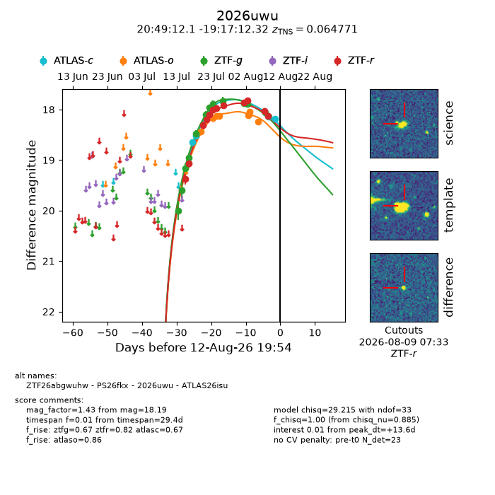
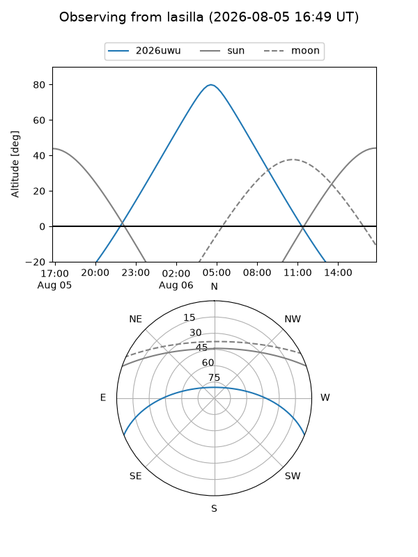
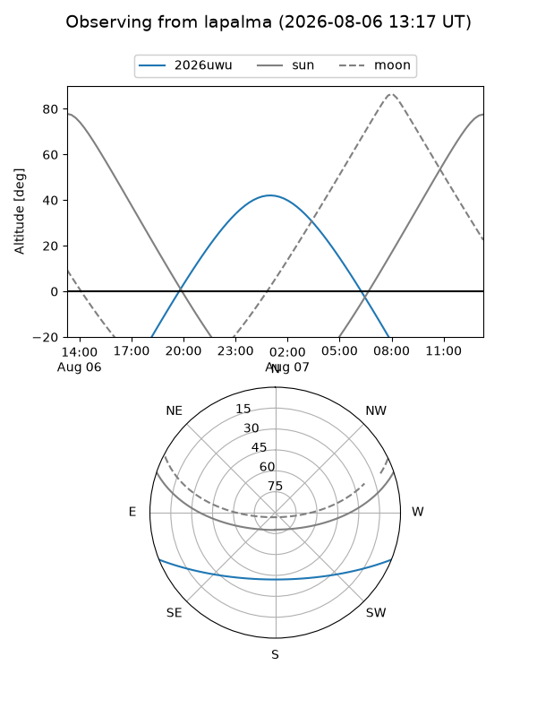
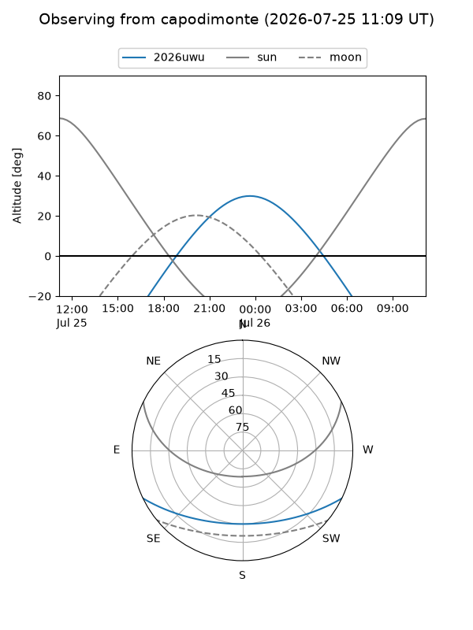
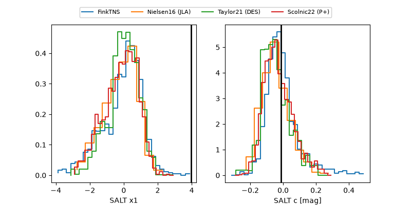

2026uwu
Target 2026uwu at 2026-08-12 19:57
Aliases and brokers:
FINK-ZTF: ztf.fink-portal.org/ZTF26abgwuhw
Lasair-ZTF: lasair-ztf.lsst.ac.uk/objects/ZTF26abgwuhw
ALeRCE-ZTF: alerce.online/object/ZTF26abgwuhw
YSE-PZ: ziggy.ucolick.org/yse/transient_detail/2026uwu
TNS name: wis-tns.org/object/2026uwu
Direct TNS query: direct search
alt names
ZTF26abgwuhw (ztf,fink_ztf)
2026uwu (tns,yse)
ATLAS26isu (atlas)
PS26fkx (panstarrs)
Coordinates:
equatorial (ra, dec) = 312.3006,-19.28676
equatorial (HMS+DMS) = 20:49:12.14,-19:17:12.32
galactic (l, b) = (27.2068,-34.29911)
Flags:
TNS type: SN Ia
TNS redshift: 0.0648
peak dt: +13.6
Photometry:
last atlasc=18.19, atlaso=18.24, ztfg=18.12, ztfr=18.13
4 atlasc, 8 atlaso, 13 ztfg, 12 ztfr detections
Lightcurve

Visibility



Additional plots
